Linear Algebra
01. Why Learn It
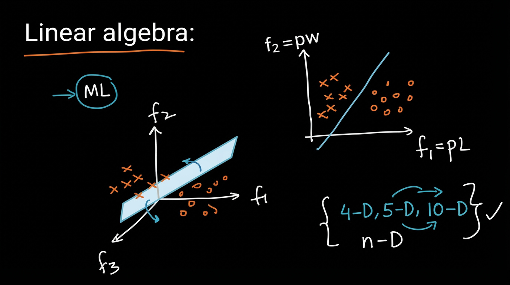
Overview
Linear Algebra is a foundational tool in Machine Learning.
Most ML problems can be viewed geometrically in a feature space.
Feature Space View
2-Dimensional Feature Space
Features:
- $ f_1 = $ length (pl)
- $ f_2 = $ width (pw)
Data points of two classes:
- Class 1 → $\times$
- Class 0 → $\circ$
A linear decision boundary (a line) separates the two classes.
3-Dimensional Feature Space
When we have three features ($f_1, f_2, f_3$), the decision boundary becomes a plane.
Higher Dimensions
The same idea extends to any number of dimensions:
| Dimension | Decision Boundary |
|---|---|
| 2-D | Line |
| 3-D | Plane |
| 4-D, 5-D, 10-D, … n-D | Hyperplane |
In general, for an $n$-dimensional feature space, a linear classifier learns an $(n-1)$-dimensional hyperplane.
Key Takeaway
Linear Algebra gives us the language to describe:
- Points (data vectors)
- Lines / Planes / Hyperplanes (decision boundaries)
- Distances, projections, angles, etc.
This geometric view is extremely useful for understanding many ML algorithms (Linear Regression, Logistic Regression, SVMs, PCA, etc.).
02. Introduction to Vectors (2-D, 3-D, n-D), Row Vector and Column Vector
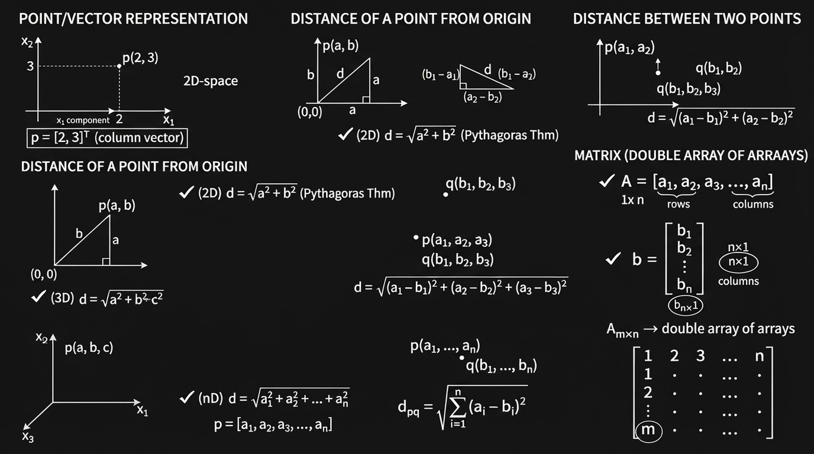
(2-D, 3-D, n-D), Row Vector & Column Vector
1. Point / Vector
- 2D: $ p = [2, 3] $
- 3D: $ q = [2, 3, 5] $
- nD: $ x = [2, 3, 4, 1, 5, \dots] $
2. Distance from Origin
- 2D: $ d = \sqrt{a^2 + b^2} $
- 3D: $ d = \sqrt{a^2 + b^2 + c^2} $
- nD: $ d = \sqrt{a_1^2 + a_2^2 + \dots + a_n^2} $
3. Distance Between Two Points
- General: $ d_{pq} = \sqrt{\sum_{i=1}^{n} (a_i - b_i)^2} $
4. Row Vector vs Column Vector
- Row Vector: $ A = [a_1, a_2, \dots, a_n] $ → shape $ 1 \times n $
- Column Vector: $ b = \begin{bmatrix} b_1 \ b_2 \ \vdots \ b_n \end{bmatrix} $ → shape $ n \times 1 $
- Matrix: shape $ m \times n $
03. Dot Product and Angle Between 2 Vectors
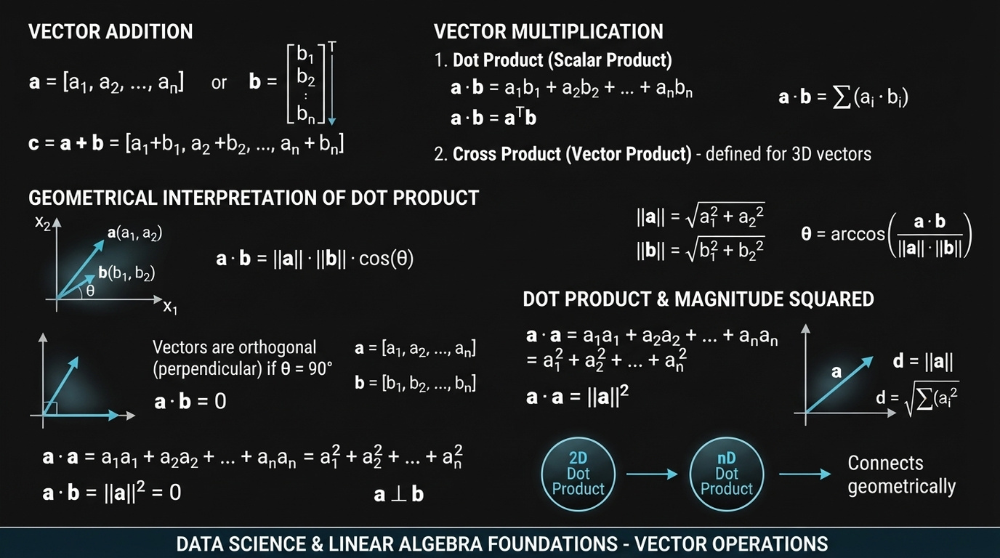
Vector Operations
Addition, Dot Product & Geometric Meaning
1. Vector Addition
Given two vectors of the same dimension:
$$ \mathbf{a} = [a_1,\ a_2,\ \dots,\ a_n] $$
$$ \mathbf{b} = [b_1,\ b_2,\ \dots,\ b_n] $$
Their sum is:
$$ \mathbf{c} = \mathbf{a} + \mathbf{b} = [a_1 + b_1,\ a_2 + b_2,\ \dots,\ a_n + b_n] $$
Component-wise addition.
2. Dot Product (Scalar Product)
Definition
$$ \mathbf{a} \cdot \mathbf{b} = a_1 b_1 + a_2 b_2 + \dots + a_n b_n = \sum_{i=1}^{n} a_i b_i $$
In matrix notation:
$$ \mathbf{a} \cdot \mathbf{b} = \mathbf{a}^T \mathbf{b} $$
where:
- $\mathbf{a}^T$ is a row vector ($1 \times n$)
- $\mathbf{b}$ is a column vector ($n \times 1$)
3. Geometric Interpretation of Dot Product
$$ \mathbf{a} \cdot \mathbf{b} = |\mathbf{a}| |\mathbf{b}| \cos\theta $$
Where:
- $|\mathbf{a}|$ = length (norm) of $\mathbf{a}$
- $|\mathbf{b}|$ = length of $\mathbf{b}$
- $\theta$ = angle between $\mathbf{a}$ and $\mathbf{b}$
Length (Norm) of a Vector
$$ |\mathbf{a}| = \sqrt{a_1^2 + a_2^2 + \dots + a_n^2} $$
(This is the same as the distance of the point from the origin.)
Finding the Angle
$$ \theta = \cos^{-1} \left( \frac{\mathbf{a} \cdot \mathbf{b}}{|\mathbf{a}| |\mathbf{b}|} \right) $$
4. Special Case: Orthogonal Vectors
If two vectors are perpendicular ((\theta = 90^\circ)):
$$ \cos 90^\circ = 0 \quad \Rightarrow \quad \mathbf{a} \cdot \mathbf{b} = 0 $$
Rule:
$$ \mathbf{a} \cdot \mathbf{b} = 0 \quad \Longleftrightarrow \quad \mathbf{a} \perp \mathbf{b} $$
This holds in any dimension (2D, 3D, … nD).
5. Dot Product of a Vector with Itself
$$ \mathbf{a} \cdot \mathbf{a} = a_1^2 + a_2^2 + \dots + a_n^2 = |\mathbf{a}|^2 $$
Therefore:
$$ |\mathbf{a}| = \sqrt{\mathbf{a} \cdot \mathbf{a}} $$
Summary Table
| Operation | Formula | Result Type |
|---|---|---|
| Addition | $\mathbf{a} + \mathbf{b}$ | Vector |
| Dot Product | $\sum a_i b_i = |\mathbf{a}||\mathbf{b}|\cos\theta$ | Scalar |
| Norm (Length) | $|\mathbf{a}| = \sqrt{\mathbf{a}\cdot\mathbf{a}}$ | Scalar |
| Angle between vectors | $\theta = \cos^{-1}\left(\dfrac{\mathbf{a}\cdot\mathbf{b}}{|\mathbf{a}||\mathbf{b}|}\right)$ | Angle |
| Orthogonality test | $\mathbf{a}\cdot\mathbf{b} = 0$ | True/False |
Key Geometric Insights
- Dot product measures how much two vectors point in the same direction.
- Positive dot product → acute angle
- Zero dot product → perpendicular
- Negative dot product → obtuse angle
These ideas work the same way in 2D, 3D, and n-D.
04. Projection and Unit Vector
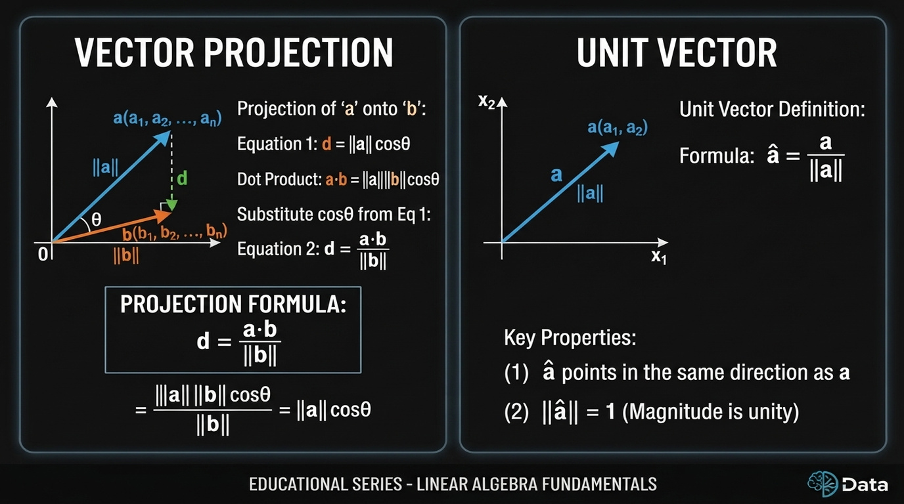
1. Projection of a Vector
Projection of vector $\mathbf{a}$ onto vector $\mathbf{b}$ is the length of the shadow of $\mathbf{a}$ on the direction of $\mathbf{b}$.
Geometric Definition
$$ d = |\mathbf{a}| \cos\theta $$
Using Dot Product
We know: $$ \mathbf{a} \cdot \mathbf{b} = |\mathbf{a}| |\mathbf{b}| \cos\theta $$
Therefore, the scalar projection of (\mathbf{a}) onto (\mathbf{b}) is:
$$ \text{proj}_{\mathbf{b}} \mathbf{a} = d = \dfrac{\mathbf{a} \cdot \mathbf{b}}{|\mathbf{b}|} $$
Or equivalently:
$$ d = \dfrac{\mathbf{a} \cdot \mathbf{b}}{|\mathbf{b}|} = |\mathbf{a}| \cos\theta $$
2. Unit Vector
A unit vector in the direction of (\mathbf{a}) is obtained by dividing the vector by its own length:
$$ \hat{\mathbf{a}} = \dfrac{\mathbf{a}}{|\mathbf{a}|} $$
Properties of Unit Vector
- $\hat{\mathbf{a}}$ has the same direction as $\mathbf{a}$
- $|\hat{\mathbf{a}}| = 1$ (its length is exactly 1)
x₂
↑
| ↗ a (a₁, a₂)
| ↗ ||a||
| ↗
+--------→ x₁
0
Quick Summary
| Concept | Formula | Meaning |
|---|---|---|
| Scalar Projection | $\dfrac{\mathbf{a} \cdot \mathbf{b}}{|\mathbf{b}|}$ | Length of shadow of $\mathbf{a}$ on $\mathbf{b}$ |
| Unit Vector | $\hat{\mathbf{a}} = \dfrac{\mathbf{a}}{|\mathbf{a}|}$ | Vector of length 1 in direction of $\mathbf{a}$ |
05. Equation of a Line (2-D), Plane (3-D) and Hyperplane (n-D), Plane Passing
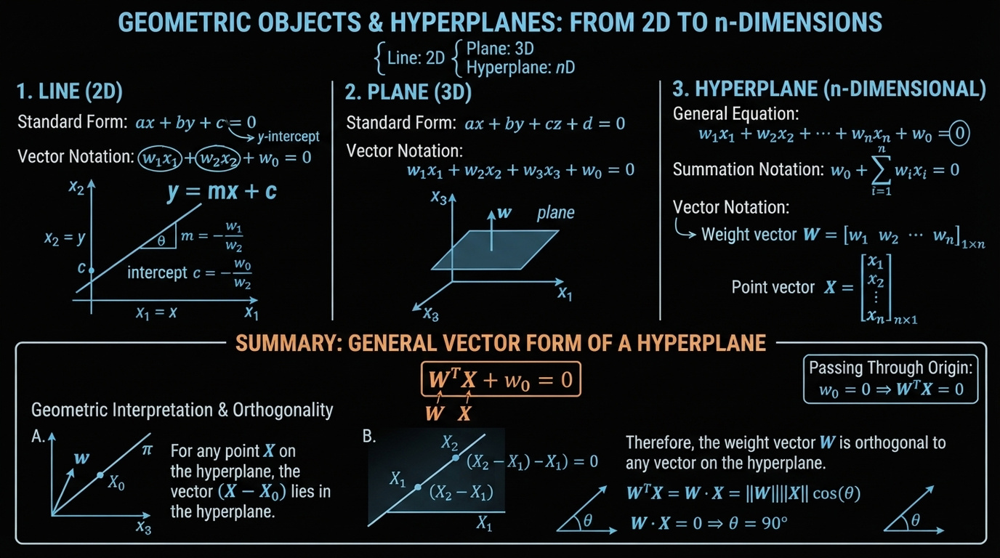
1. Basic Idea
| Dimension | Geometric Object | Equation Form |
|---|---|---|
| 2D | Line | $ ax + by + c = 0 $ |
| 3D | Plane | $ ax + by + cz + d = 0 $ |
| nD | Hyperplane | $ w_0 + w_1 x_1 + \dots + w_n x_n = 0 $ |
2. Equation of a Line (2D)
Slope-intercept form: $$ y = mx + c $$
General form: $$ ax + by + c = 0 $$
Can also be written as: $$ w_1 x_1 + w_2 x_2 + w_0 = 0 $$
Solving for $ x_2 $: $$ x_2 = -\frac{w_0}{w_2} - \frac{w_1}{w_2} x_1 $$
- Slope $ m = -\dfrac{w_1}{w_2} $
- Intercept $ c = -\dfrac{w_0}{w_2} $
3. Equation of a Plane (3D)
$$ ax + by + cz + d = 0 $$
or
$$ w_1 x_1 + w_2 x_2 + w_3 x_3 + w_0 = 0 $$
4. Hyperplane in n-Dimensions
General equation: $$ w_0 + w_1 x_1 + w_2 x_2 + \dots + w_n x_n = 0 $$
Compact forms:
Summation form: $$ w_0 + \sum_{i=1}^{n} w_i x_i = 0 $$
Vector form: $$ w_0 + \mathbf{w}^T \mathbf{x} = 0 $$
where $$ \mathbf{w} = \begin{bmatrix} w_1 \ w_2 \ \vdots \ w_n \end{bmatrix}, \quad \mathbf{x} = \begin{bmatrix} x_1 \ x_2 \ \vdots \ x_n \end{bmatrix} $$
5. Hyperplane Passing Through the Origin
When the hyperplane passes through the origin, the bias term is zero:
$$ \mathbf{w}^T \mathbf{x} = 0 $$
| Object | Equation (through origin) |
|---|---|
| Line (2D) | $ w_1 x_1 + w_2 x_2 = 0 $ |
| Plane (3D) | $ w_1 x_1 + w_2 x_2 + w_3 x_3 = 0 $ |
| Hyperplane | $ \mathbf{w}^T \mathbf{x} = 0 $ |
6. Geometric Meaning of $\mathbf{w}$
- $\mathbf{w}$ is the normal vector to the hyperplane $\pi$.
- For any point $\mathbf{x}$ lying on the hyperplane: $$ \mathbf{w} \cdot \mathbf{x} = 0 \quad \Rightarrow \quad \mathbf{w} \perp \mathbf{x} $$
That is, the angle between $\mathbf{w}$ and any vector lying on the hyperplane is $ 90^\circ $.
Unit normal vector: $$ \hat{\mathbf{w}} = \dfrac{\mathbf{w}}{|\mathbf{w}|} $$
Summary
- A hyperplane is the generalization of a line (2D) and a plane (3D) to higher dimensions.
- The most useful form in Machine Learning is:
$$ \boxed{w_0 + \mathbf{w}^T \mathbf{x} = 0} $$
- When the hyperplane passes through the origin:
$$ \boxed{\mathbf{w}^T \mathbf{x} = 0} $$
- $\mathbf{w}$ is always perpendicular to the hyperplane.
06. Intercept form of Equation of a Plane
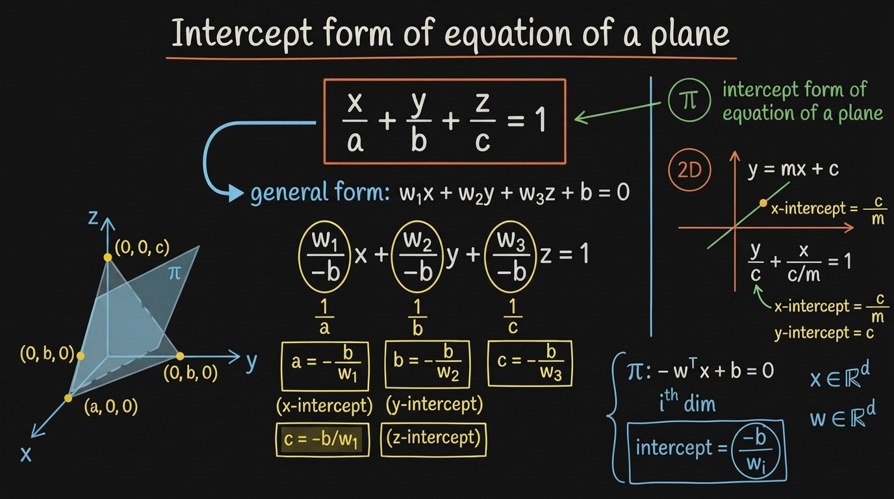
General form (3D): $w_1x + w_2y + w_3z + b = 0$, where $\mathbf{w}$ is the normal to the plane and $b$ is the bias.
Intercept form: if the plane cuts the axes at $(a,0,0)$, $(0,b,0)$, $(0,0,c)$:
$$\frac{x}{a} + \frac{y}{b} + \frac{z}{c} = 1$$
Derivation (filling in the board's algebra): divide the general form by $-b$:
$$\underbrace{\left(-\frac{w_1}{b}\right)}{1/a}x + \underbrace{\left(-\frac{w_2}{b}\right)}{1/b}y + \underbrace{\left(-\frac{w_3}{b}\right)}_{1/c}z - 1 = 0$$
which gives the intercepts:
$$a = -\frac{b}{w_1}, \qquad b_{int} = -\frac{b}{w_2}, \qquad c = -\frac{b}{w_3}$$
Pattern: every intercept is $-\dfrac{\text{bias}}{\text{corresponding weight}}$.
2D check (your line example): from $y = mx + c$, rewrite as $\frac{y}{c} + \left(-\frac{m}{c}\right)x - 1 = 0$:
- y-intercept $= c$
- x-intercept $= -\dfrac{c}{m}$ ✓ (matches the board)
n-D generalization: for hyperplane $\mathbf{w}^T\mathbf{x} + b = 0$, the intercept along the $i$-th axis is:
$$x_i^{\text{intercept}} = -\frac{b}{w_i}$$
Two caveats worth noting (not stated on the board): intercept form requires $b \neq 0$ (plane can't pass through the origin) and $w_i \neq 0$ (plane can't be parallel to axis $i$) — otherwise that intercept doesn't exist.
07. Distance of a Point from a Plane/Hyperplane, Half-Spaces
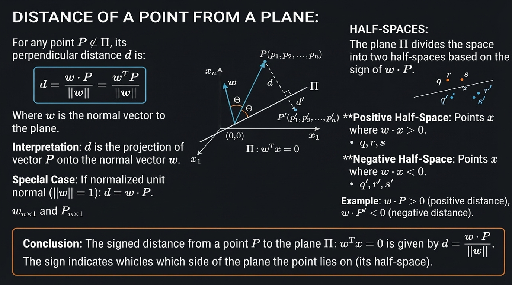
1. Distance of a Point from a Hyperplane
Consider a hyperplane passing through the origin:
$$ \mathbf{w}^T \mathbf{x} = 0 $$
For a point $\mathbf{p} = (p_1, p_2, \dots, p_n)$, the signed distance from the point to the hyperplane is:
$$ d = \dfrac{\mathbf{w}^T \mathbf{p}}{|\mathbf{w}|} = \dfrac{\mathbf{w} \cdot \mathbf{p}}{|\mathbf{w}|} $$
Special Case (when $\mathbf{w}$ is a unit vector)
If $|\mathbf{w}| = 1$, then the formula simplifies to:
$$ d = \mathbf{w}^T \mathbf{p} $$
2. Geometric Interpretation
- The vector $\mathbf{w}$ is perpendicular (normal) to the hyperplane $\pi$.
- The distance $d$ is the length of the perpendicular dropped from the point $\mathbf{p}$ onto the hyperplane.
p
•
| d
|
----------+---------- π (hyperplane)
↑
w (normal)
3. Signed Distance & Half-Spaces
The sign of the distance tells us which side of the hyperplane the point lies on:
| Distance | Meaning |
|---|---|
| $ d > 0 $ | Point lies on the same side as the direction of $\mathbf{w}$ |
| $ d < 0 $ | Point lies on the opposite side of $\mathbf{w}$ |
| $ d = 0 $ | Point lies on the hyperplane |
Example
$$ d = \dfrac{\mathbf{w} \cdot \mathbf{p}}{|\mathbf{w}|} = +ve $$
$$ d' = \dfrac{\mathbf{w} \cdot \mathbf{p}'}{|\mathbf{w}|} = -ve $$
- Points with positive signed distance → one half-space
- Points with negative signed distance → the other half-space
4. Half-Spaces
A hyperplane divides the entire space into two half-spaces:
- In 2D → a line divides the plane into two half-planes
- In 3D → a plane divides the space into two half-spaces
- In nD → a hyperplane divides $\mathbb{R}^n$ into two half-spaces
Summary
Distance formula: $$ d = \dfrac{\mathbf{w} \cdot \mathbf{p}}{|\mathbf{w}|} $$
The sign of $d$ indicates which side of the hyperplane the point is on.
This idea is extremely important in Machine Learning (e.g., SVM, Logistic Regression, Perceptron) for deciding class labels based on which side of the decision boundary a point lies.
08. Equation of a Circle (2-D), Sphere (3-D) and Hypersphere (n-D)
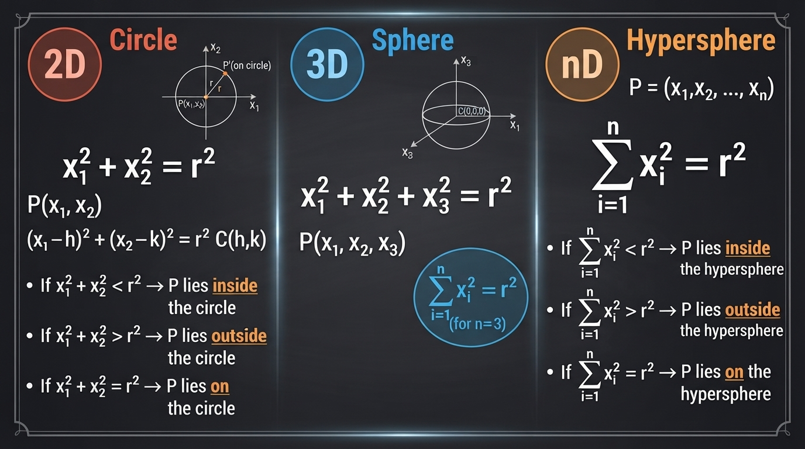
1. Circle (2D)
Equation of a circle centered at the origin:
$$ x^2 + y^2 = r^2 $$
or
$$ x_1^2 + x_2^2 = r^2 $$
General circle (center at $(h, k)$):
$$ (x - h)^2 + (y - k)^2 = r^2 $$
Position of a Point $ p(x_1, x_2) $
| Condition | Location of Point |
|---|---|
| $ x_1^2 + x_2^2 < r^2 $ | Inside the circle |
| $ x_1^2 + x_2^2 > r^2 $ | Outside the circle |
| $ x_1^2 + x_2^2 = r^2 $ | On the circle |
2. Sphere (3D)
Equation of a sphere centered at the origin:
$$ x_1^2 + x_2^2 + x_3^2 = r^2 $$
3. Hypersphere (n-D)
Equation of a hypersphere centered at the origin:
$$ x_1^2 + x_2^2 + \dots + x_n^2 = r^2 $$
or in summation form:
$$ \sum_{i=1}^{n} x_i^2 = r^2 $$
Position of a Point $ p = (x_1, x_2, \dots, x_n) $
| Condition | Location of Point |
|---|---|
| $ \sum_{i=1}^{n} x_i^2 < r^2 $ | Inside the hypersphere |
| $ \sum_{i=1}^{n} x_i^2 > r^2 $ | Outside the hypersphere |
| $ \sum_{i=1}^{n} x_i^2 = r^2 $ | On the hypersphere |
Summary
| Dimension | Object | Equation (centered at origin) |
|---|---|---|
| 2D | Circle | $ x_1^2 + x_2^2 = r^2 $ |
| 3D | Sphere | $ x_1^2 + x_2^2 + x_3^2 = r^2 $ |
| nD | Hypersphere | $ \sum_{i=1}^{n} x_i^2 = r^2 $ |
- The value of $ \sum x_i^2 $ compared to $ r^2 $ tells us whether a point lies inside, outside, or on the hypersphere.
- This idea is useful in Machine Learning (e.g., RBF kernels, anomaly detection, nearest neighbor methods, etc.).
09. Equation of an Ellipse (2-D), Ellipsoid (3-D) and Hyperellipsoid (n-D)
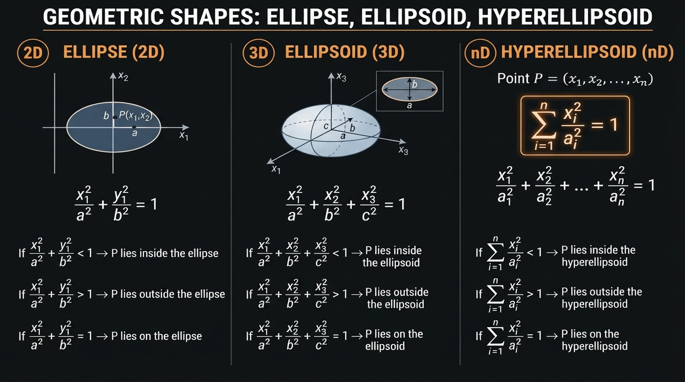
1. Ellipse (2D)
Standard equation (centered at origin, axes aligned with coordinate axes):
$$ \frac{x^2}{a^2} + \frac{y^2}{b^2} = 1 $$
or
$$ \frac{x_1^2}{a^2} + \frac{x_2^2}{b^2} = 1 $$
- $ a $ = semi-major / semi-minor axis along $ x_1 $
- $ b $ = semi-major / semi-minor axis along $ x_2 $
Position of a Point $ p(x_1, x_2) $
| Condition | Location of Point |
|---|---|
| $ \dfrac{x_1^2}{a^2} + \dfrac{x_2^2}{b^2} < 1 $ | Inside the ellipse |
| $ \dfrac{x_1^2}{a^2} + \dfrac{x_2^2}{b^2} > 1 $ | Outside the ellipse |
| $ \dfrac{x_1^2}{a^2} + \dfrac{x_2^2}{b^2} = 1 $ | On the ellipse |
2. Ellipsoid (3D)
Standard equation (centered at origin):
$$ \frac{x_1^2}{a^2} + \frac{x_2^2}{b^2} + \frac{x_3^2}{c^2} = 1 $$
- $ a, b, c $ are the semi-axes lengths along $ x_1, x_2, x_3 $ respectively.
3. Hyperellipsoid (n-D)
General equation (centered at origin, axes-aligned):
$$ \frac{x_1^2}{a_1^2} + \frac{x_2^2}{a_2^2} + \dots + \frac{x_n^2}{a_n^2} = 1 $$
Position of a Point
| Condition | Location |
|---|---|
| $ \sum_{i=1}^{n} \dfrac{x_i^2}{a_i^2} < 1 $ | Inside the hyperellipsoid |
| $ \sum_{i=1}^{n} \dfrac{x_i^2}{a_i^2} > 1 $ | Outside the hyperellipsoid |
| $ \sum_{i=1}^{n} \dfrac{x_i^2}{a_i^2} = 1 $ | On the hyperellipsoid |
Summary
| Dimension | Object | Equation (centered at origin) |
|---|---|---|
| 2D | Ellipse | $ \dfrac{x_1^2}{a^2} + \dfrac{x_2^2}{b^2} = 1 $ |
| 3D | Ellipsoid | $ \dfrac{x_1^2}{a^2} + \dfrac{x_2^2}{b^2} + \dfrac{x_3^2}{c^2} = 1 $ |
| nD | Hyperellipsoid | $ \sum_{i=1}^{n} \dfrac{x_i^2}{a_i^2} = 1 $ |
- When $ a = b $ (2D) or $ a = b = c $ (3D), the shape becomes a circle or sphere.
- Hyperellipsoids appear in Machine Learning in contexts such as Mahalanobis distance, Gaussian distributions, and certain kernel methods.
10. Square, Rectangle
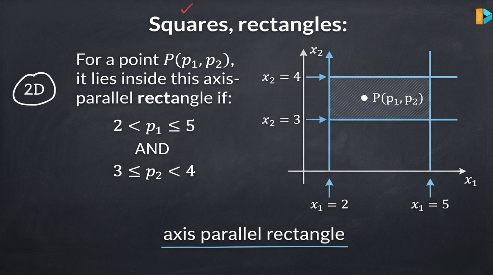
1. Axis-Parallel Rectangle in 2D
An axis-parallel rectangle is defined by simple bounds on each coordinate.
Example
A rectangle defined by:
- $ 2 < x_1 < 5 $
- $ 3 < x_2 < 4 $
Condition for a point $ p = (p_1, p_2) $ to lie inside the rectangle:
$$ \begin{cases} p_1 > 2 \quad \text{and} \quad p_1 < 5 \ p_2 > 3 \quad \text{and} \quad p_2 < 4 \end{cases} $$
Or written compactly:
$$ \text{if } (p_1 > 2 \land p_1 < 5) \land (p_2 > 3 \land p_2 < 4) \quad \Rightarrow \quad p \text{ lies inside the rectangle} $$
2. Geometric View
x₂
↑
4 | ┌─────────────┐
| │ │
3 | └─────────────┘
|
+----------------------------------→ x₁
2 5
- The sides of the rectangle are parallel to the coordinate axes.
- Each side can be represented as a vertical or horizontal line (which is a special case of a linear equation $ w_0 + w_1 x_1 + w_2 x_2 = 0 $).
3. Representation using Linear Inequalities
Each boundary of the rectangle is a linear constraint:
| Boundary | Equation | Inequality side |
|---|---|---|
| Left side | $ x_1 = 2 $ | $ x_1 > 2 $ |
| Right side | $ x_1 = 5 $ | $ x_1 < 5 $ |
| Bottom side | $ x_2 = 3 $ | $ x_2 > 3 $ |
| Top side | $ x_2 = 4 $ | $ x_2 < 4 $ |
Summary
- Axis-parallel rectangles (and squares) are defined by independent range constraints on each feature.
- Checking whether a point lies inside such a rectangle is very efficient (just a few comparisons).
- This idea is used in Machine Learning in:
- Decision Trees / Decision Stumps
- Range queries
- Some forms of rule-based models
- Axis-aligned bounding boxes
11. Hyper Cube, Hyper Cuboid
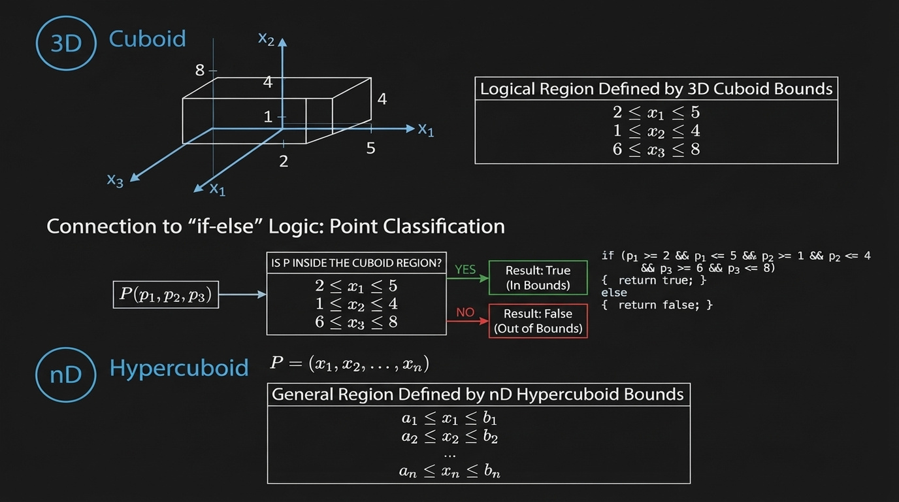
1. Cuboid (3D)
A cuboid (also called a rectangular box) is the 3-dimensional version of a rectangle.
It is defined by independent range constraints on each of the three coordinates.
Example:
$$ \begin{align*} 2 &< x_1 < 5 \ 1 &< x_2 < 4 \ 0 &< x_3 < 6 \end{align*} $$
A point $ p = (p_1, p_2, p_3) $ lies inside the cuboid if it satisfies all three inequalities.
2. Hypercuboid (n-Dimensional)
A hypercuboid (also called a hyper-rectangle or axis-aligned bounding box) is the generalization of a rectangle/cuboid to $ n $ dimensions.
It is defined by a set of independent interval constraints:
$$ \begin{align*} l_1 &< x_1 < u_1 \ l_2 &< x_2 < u_2 \ &\vdots \ l_n &< x_n < u_n \end{align*} $$
where $ l_i $ and $ u_i $ are the lower and upper bounds for the $ i $-th dimension.
Checking Membership
To test whether a point lies inside a hypercuboid, we simply check whether every coordinate satisfies its corresponding range constraint (a series of if-else or logical AND conditions).
Summary
| Dimension | Object | Defined by |
|---|---|---|
| 2D | Rectangle | Two interval constraints |
| 3D | Cuboid | Three interval constraints |
| nD | Hypercuboid | $ n $ independent interval constraints |
- Hypercuboids are extremely common in Machine Learning and Data Science:
- Decision Trees (axis-aligned splits)
- Range search / filtering
- Bounding boxes in computer vision
- Feature scaling / normalization regions
12. Revision Questions
Questions
1. Define Point/Vector (2-D, 3-D, n-D)?
2. How to calculate Dot product and angle between 2 vectors?
3. Define Projection, unit vector?
4. Equation of a line (2-D), plane (3-D) and hyperplane (n-D)?
5. Distance of a point from a plane/hyperplane, half-spaces?
6. Equation of a circle (2-D), sphere (3-D) and hypersphere (n-D)?
7. Equation of an ellipse (2-D), ellipsoid (3-D) and hyperellipsoid (n-D)?
8. Square, Rectangle, Hyper-cube and Hyper-cuboid?
1. Define Point/Vector (2-D, 3-D, n-D)?
A point represents a location in space.
A vector represents both magnitude and direction (usually from the origin to that point).
- 2-D: $ \mathbf{x} = (x_1, x_2) $ or $ \begin{bmatrix} x_1 \ x_2 \end{bmatrix} $
- 3-D: $ \mathbf{x} = (x_1, x_2, x_3) $
- n-D: $ \mathbf{x} = (x_1, x_2, \dots, x_n) \in \mathbb{R}^n $
In machine learning, every data point is treated as a vector in $ \mathbb{R}^d $ where $ d $ is the number of features.
2. How to calculate Dot product and angle between 2 vectors?
Dot Product of two vectors $ \mathbf{a} $ and $ \mathbf{b} $:
$ \mathbf{a} \cdot \mathbf{b} = a_1 b_1 + a_2 b_2 + \dots + a_n b_n = |\mathbf{a}| |\mathbf{b}| \cos\theta $
Angle between them:
$ \cos\theta = \frac{\mathbf{a} \cdot \mathbf{b}}{|\mathbf{a}| |\mathbf{b}|} $
$ \theta = \cos^{-1}\left( \frac{\mathbf{a} \cdot \mathbf{b}}{|\mathbf{a}| |\mathbf{b}|} \right) $
Special cases:
- $ \theta = 0^\circ $ → vectors point in the same direction
- $ \theta = 90^\circ $ → vectors are orthogonal ($ \mathbf{a} \cdot \mathbf{b} = 0 $)
- $ \theta = 180^\circ $ → vectors point in opposite directions
3. Define Projection, unit vector?
Unit Vector: A vector with length 1.
$ \hat{\mathbf{u}} = \frac{\mathbf{u}}{|\mathbf{u}|} $
Projection of vector $ \mathbf{a} $ onto vector $ \mathbf{b} $:
$ \text{proj}_{\mathbf{b}} \mathbf{a} = \left( \frac{\mathbf{a} \cdot \mathbf{b}}{|\mathbf{b}|^2} \right) \mathbf{b} $
The scalar projection (signed length) is:
$ \frac{\mathbf{a} \cdot \mathbf{b}}{|\mathbf{b}|} $
Projection is heavily used when computing the distance of a point from a hyperplane.
4. Equation of a line (2-D), plane (3-D) and hyperplane (n-D)?
Line in 2-D:
$ w_1 x_1 + w_2 x_2 + b = 0 $
or $ \mathbf{w}^T \mathbf{x} + b = 0 $
Plane in 3-D: $ w_1 x_1 + w_2 x_2 + w_3 x_3 + b = 0 $
Hyperplane in n-D: $ \mathbf{w}^T \mathbf{x} + b = 0 $
where $ \mathbf{w} $ is the normal vector to the hyperplane.
This is the fundamental equation used in Logistic Regression and Linear SVM.
5. Distance of a point from a plane/hyperplane, half-spaces?
Distance of a point $ \mathbf{x}_0 $ from the hyperplane $ \mathbf{w}^T \mathbf{x} + b = 0 $:
$ d = \frac{|\mathbf{w}^T \mathbf{x}_0 + b|}{|\mathbf{w}|} $
Signed distance: $ \frac{\mathbf{w}^T \mathbf{x}_0 + b}{|\mathbf{w}|} $
Half-spaces:
- $ \mathbf{w}^T \mathbf{x} + b > 0 $ → one side of the hyperplane
- $ \mathbf{w}^T \mathbf{x} + b < 0 $ → the other side
These half-spaces are used to define the positive and negative regions in linear classifiers.
6. Equation of a circle (2-D), sphere (3-D) and hypersphere (n-D)?
Circle (2-D): $ (x_1 - c_1)^2 + (x_2 - c_2)^2 = r^2 $
Sphere (3-D): $ (x_1 - c_1)^2 + (x_2 - c_2)^2 + (x_3 - c_3)^2 = r^2 $
Hypersphere (n-D): $ |\mathbf{x} - \mathbf{c}|^2 = r^2 $
or $ (\mathbf{x} - \mathbf{c})^T (\mathbf{x} - \mathbf{c}) = r^2 $
where $ \mathbf{c} $ is the center and $ r $ is the radius.
7. Equation of an ellipse (2-D), ellipsoid (3-D) and hyperellipsoid (n-D)?
Ellipse (2-D): $ \frac{(x_1 - c_1)^2}{a^2} + \frac{(x_2 - c_2)^2}{b^2} = 1 $
Ellipsoid (3-D): $ \frac{(x_1 - c_1)^2}{a^2} + \frac{(x_2 - c_2)^2}{b^2} + \frac{(x_3 - c_3)^2}{c^2} = 1 $
Hyperellipsoid (n-D): $ (\mathbf{x} - \mathbf{c})^T A (\mathbf{x} - \mathbf{c}) = 1 $
where $ A $ is a positive definite matrix that controls the shape and orientation.
Ellipsoids appear in Mahalanobis distance and Gaussian distributions.
8. Square, Rectangle, Hyper-cube and Hyper-cuboid?
Square (2-D):
All sides equal, all angles $ 90^\circ $.
Side length $ a $ → volume (area) = $ a^2 $
Rectangle (2-D):
Opposite sides equal, all angles $ 90^\circ $.
Sides $ a, b $ → area = $ a \times b $
Hypercube (n-D):
Generalization of a square/cube.
All sides equal to length $ a $.
Volume = $ a^n $
Hyper-cuboid (n-D) (also called hyperrectangle):
Generalization of a rectangle.
Sides of lengths $ a_1, a_2, \dots, a_n $.
Volume = $ a_1 \times a_2 \times \dots \times a_n $
These shapes are useful when thinking about axis-aligned decision boundaries and feature space partitioning.